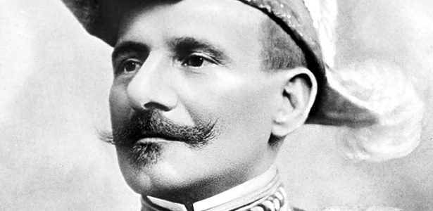

Principais Figuras da Revolta

João Cândido Felisberto
O "Almirante Negro"
Líder incontestável da revolta, João Cândido foi um marinheiro experiente que articulou e liderou o levante contra os castigos corporais.
Ler mais
Outros Líderes
Marinheiros Engajados
Diversos outros marinheiros desempenharam papéis cruciais na organização e execução da revolta, cada um com sua história e motivação.
Ler mais

Figuras do Governo
Envolvidos nas Decisões
Personalidades do governo e da Marinha que estiveram envolvidas nas negociações e nas consequências da revolta.
Ler mais